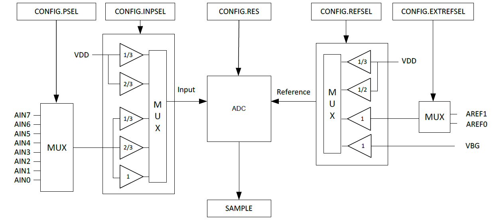
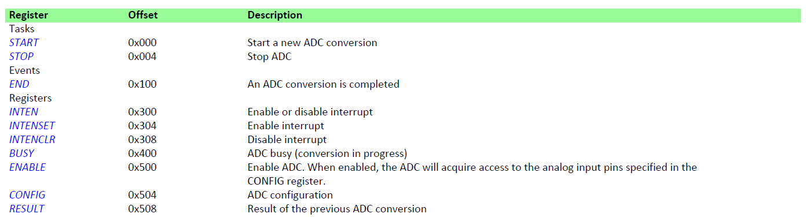
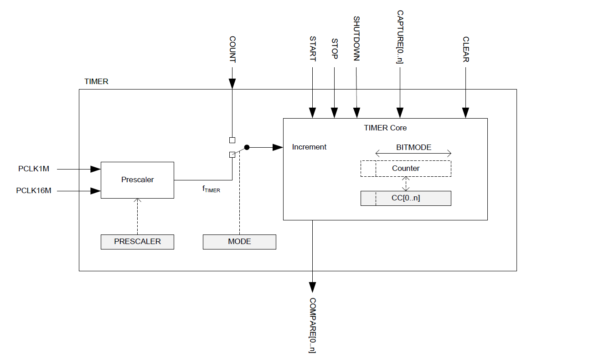
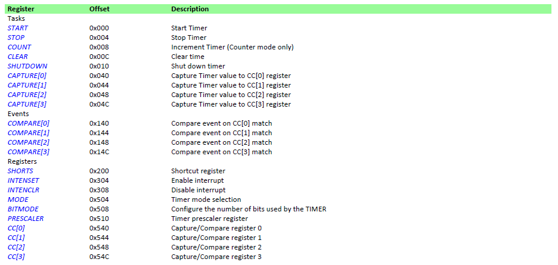
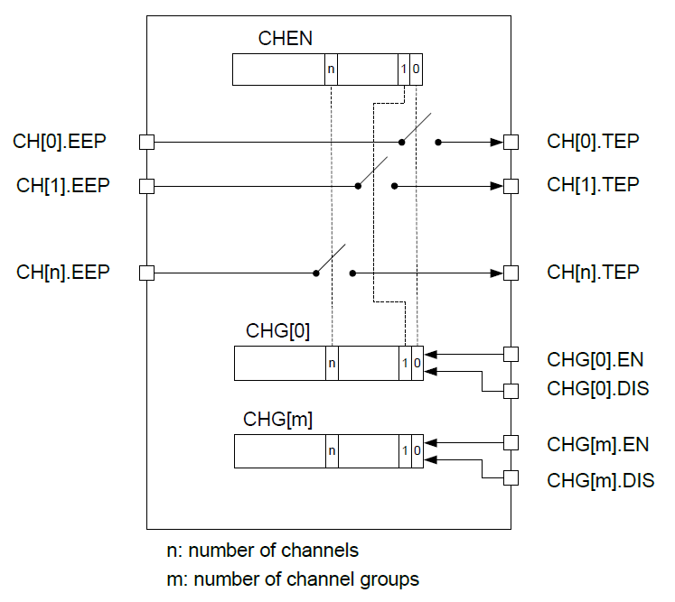
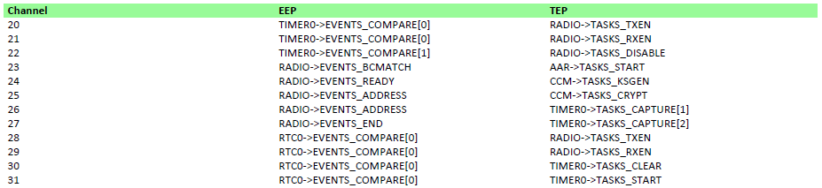

Добрый день.
В прошлой статье мы достаточно бегло ознакомились с минимальным набором возможностей BLE стека и создали свой первый проект для соединения двух удаленных устройств. Теперь пришло время обратить внимание на аппаратную часть nRF51822, а именно на 32-битный микроконтроллер на базе архитектуры ARM с ядром Cortex M0 (256kB/128kB flash + 32kB/16kB RAM).
В данной статье хотелось бы уделить время наверное одной из основных особенностей устройств Bluetooth Low Energy — энергосбережению, а также рассмотреть наиболее часто используемую периферию, такую как АЦП, таймеры и интересный, как мне кажется блок PPI. Остальные часто используемые периферийные блоки такие, как SPI, I2C, UART рассмотрим в следующих статьях.
Итак, начнем.
Режимы энергосбережения
Как уже говорилось выше, одной из ключевых особенностей BLE чипов является их низкое энергопотребление, что собственно и определяет их использование в различных SMART-устройствах. Рассмотрим, что же предлагает один из лидеров сегмента BLE — Nordic Semiconductor со своими nRF51822.
Согласно даташиту, nRF51822 имеет два основных режима работы, один из которых стационарный с возможностью перехода подрежимы энергосбережения, и один для достижения максимльной экономии энергии.
System ON mode
System ON — основной режим, в котором контроллер полностью функционален и выполняет все заявленные функции. Контроллер входит в спящий режим посредством инструкций WFI и WFE, разница между которыми в том, что в первом случае пробуждение происходит по прерыванию разрешенному в NVIC, а во втором — от любого события, как разрешенного в NVIC, так и не разрешенного. System ON примечателен тем, что в спящем режиме может находится в двух состояниях: Low power и Constant Latency.
Low power — режим пониженного энергопотребления, который достигается путем оптимизации системы управления питанием. В данном случае отключается часть регуляторов (подробнее можно посмотреть в product specification) и кварцевый резонатор, что приводит к увеличению временного промежутка, необходимого для пробуждения ядра, а также задержки ответа на запрос PPI модуля (подробнее о PPI модуле смотрите ниже).К тому же этот промежуток не всегда постоянен и может меняться в зависимости от периферии, вызвавшей прерывание. Для входа в Low Power необходимо активировать задачу в регистре LOWPWR. В данный режим является стандартным и именно в нем находится контроллер после Reset.
Constant Latency — режим, в целом схожий с предыдущим, отличие лишь в том, что задержки ядра и ответа на запрос PPI модуля являются постоянными и минимальными. Однако это влечет за собой более высокое энергопотребление, так как кварцевый резонатор остается включенным, хоть и находится в режиме минимального потребления.
Для входа в Constant Latency необходимо активировать задачу в регистре CONSTLAT.
Потребление в режиме System ON Low power напрямую зависит от количества активных блоков памяти и составляет:
2.6 мкА — 16 Кб RAM активно
3.8 мкА — 32 Кб RAM активно
Специалисты и Nordic советуют придерживаться ряда правил для существенно большего снижения энергопотребления в режиме System On:
— использовать встроенный DC/DC (выигрыш до 30%);
— увеличить интервал между advertising пакетами;
— по возможности снизить объем advertising пакета;
— по возможности снизить мощность радиопередатчика;
— отключать неиспользуемые периферийные модули перед переходом в режим «сна»;
— отключать SPI,TWI,UART модули после завершения цикла приема/передачи.
System OFF mode
System OFF — режим, в котором достигается наиболее экономичный режим энергопотребления. В данном режиме ядро контроллера отключено и все процессы прекращены. Активными в данном случае остаются один или несколько блоков RAM. Выход из данного режима возможен по внешнему сигналу DETECT, по сигналу ANADETECT от встроенного компаратора LPCOMP, а также по сигналу RESET. После выхода выполняется принудительный reset системы.
Для входа в режим System OFF необходимо выполнить следующие действия в следующих регистрах:
1. RESETREAS — определить событие пробуждения в регистре;
2. RAMON и RAMONB — определить активные блоки RAM в регистре;
3. SYSTEMOFF — активировать System OFF режим в регистре;
4. настроить блок ответственный за пробуждение контроллера.
Функция запуска режима SystemOFF
#define WAKEUP_PIN 1
void SystemOFF_active(void){
/* Настройка события пробуждения: от внешнего прерывания */
NRF_POWER->RESETREAS = POWER_RESETREAS_OFF_Detected;
/* Настройка активных блоков RAM */
NRF_POWER->RAMON = POWER_RAMON_OFFRAM0_RAM0Off;
/* Настройка ножки P0.01 в качестве приемника внешних событий*/
NRF_GPIO->PIN_CNF[WAKEUP_PIN] =
(GPIO_PIN_CNF_DIR_Input << GPIO_PIN_CNF_DIR_Pos)|
(GPIO_PIN_CNF_PULL_Pulldown << GPIO_PIN_CNF_PULL_Pos)|
(GPIO_PIN_CNF_SENSE_High << GPIO_PIN_CNF_SENSE_Pos)|
(GPIO_PIN_CNF_INPUT_Connect << GPIO_PIN_CNF_INPUT_Pos);
/* Настройка мониторинга событий на ножке P0.01*/
NRF_GPIOTE->CONFIG[0] =
(GPIOTE_CONFIG_MODE_Event << GPIOTE_CONFIG_MODE_Pos)|
(WAKEUP_PIN << GPIOTE_CONFIG_PSEL_Pos)|
(GPIOTE_CONFIG_POLARITY_LoToHi << GPIOTE_CONFIG_POLARITY_Pos);
/* Вход в режим SystemOFF*/
NRF_POWER->SYSTEMOFF = 1;
}
Потребление в данном режиме напрямую зависит от количества активных блоков памяти и составляет:
0.6 мкА — нет активных блоков RAM
1.8 мкА — 16 Кб RAM активно
3.0 мкА — 32 Кб RAM активно
В целом интересный режим энергосбережения, но далеко не всем окажется по душе из-за скудного перечня возможностей пробуждения контроллера.
Аналого-цифровой преобразователь (ADC)
Аналого-цифровой преобразователь (ADC) один из наиболее часто используемых элементов периферии микроконтроллера. Описывать принцип его работы я смысла не вижу, так как об этом написано огромное количество сторонних статей различной степени углубленности. Однако обратить внимание на особенности исполнения АЦП стоит. У nRF51822 есть один АЦП и характеристики его достаточно скромные:
— 8 каналов + 2 внешних канала для подачи внешнего опорного напряжения;
— разрешение 8,9,10 бит;

Собственно и все, что можно сказать об основных характеристиках. Стоит отметить, что каналы мультиплексированы, т.е. выборка единовременно может происходить тольк с одного канала, а режим преобразования, к сожалению, только один — однократное преобразование. Реализвать непрерываное можно при помощи таймера и модуля PPI, но об этом мы поговорим чуть позже.
Также, важным параметром, является время одного преобразования, которое необходимо учитывать в случае реализации непрерывного преобразования нескольких каналов с промежуточной обработкой данных.
68 мкс — 10 бит АЦП;
36 мкс — 9 бит АЦП;
20 мкс — 9 бит АЦП.
Для активации АЦП в режиме одиночного преобразования необходимо выполнить следующие действия в следующих регистрах:
1. CONFIG — определить разрядность АЦП в регистре;
2. CONFIG — определить делитель напряжения в регистре;
3. CONFIG — определить номер канала для преобразования в регистре;
4. POWER — активировать прерывания (опционально) в регистре;
5. ENABLE — подать питание на АЦП в регистре.
6. TASKS_START — запустить преобразование в регистре.
Ниже представлен пример инициализации АЦП для проведения одиночного преобразования с последующей обработкой полученного результата в прерывании.
Функция инициализации АЦП
/* Функция инициализации АЦП */
/* АЦП - 10 бит, Делитель напряжения - 1/3, Канал преобразования - 2 */
NRF_ADC->CONFIG |=
(ADC_CONFIG_RES_10bit << ADC_CONFIG_RES_Pos)|
(ADC_CONFIG_INPSEL_AnalogInputOneThirdPrescaling << ADC_CONFIG_INPSEL_Pos)|
(ADC_CONFIG_PSEL_AnalogInput2 << ADC_CONFIG_PSEL_Pos);
/* Активация прерывания по окончанию преобразования */
NRF_ADC->INTENSET |= ADC_INTENSET_END_Enabled << ADC_INTENSET_END_Pos;
/* Включение АЦП */
NRF_ADC->ENABLE |= ADC_ENABLE_ENABLE_Enabled << ADC_ENABLE_ENABLE_Pos;
/* Разрешение прерываний в NVIC и установка приоритета */
NVIC_SetPriority(ADC_IRQn, 1);
NVIC_EnableIRQ(ADC_IRQn);
/* Запустить одиночное преобразование */
NRF_ADC->TASKS_START = 1;
Обработчик прерывания АЦП
/* Функция обработчик прерывания */
#define ADC_REF 1200
#define ADC_PRESCALING 3
uint16_t adc_value, adc_value_in_mV;
void ADC_IRQHandler(void){
/* Сброс флага, сигнализирующего об окончании преобразования */
NRF_ADC->EVENTS_END = 0;
/* Проверка текущего канала преобразования */
switch(NRF_ADC->CONFIG >> ADC_CONFIG_PSEL_Pos){
case (ADC_CONFIG_PSEL_AnalogInput2):
adc_value = NRF_ADC->RESULT;
adc_value_in_mV = ((adc_value*ADC_REF)/1024)*ADC_PRESCALING
break;
/* здесь можно реализовать обработку данных с нужного канала */
default:
break;
}
}
Более подробно описывать смысла не вижу, так как для людей, которые читают даташиты, настройка не составит особого труда (регистров мало, все интуитивно понятны), а для тех, кто их читать не любит, данной информации (и той, что описана ниже) будет достаточно, чтобы запустить и использовать АЦП.

Таймеры (TIMER)
У nRF51822 есть 3 таймера, которые могут работать в двух режимах: в режиме таймера (сравнения) и счетчика (захвата). Все таймеры — 8, 16, 24 и 32 битные.

Режим таймера (сравнения): Самый обыкновенный режим работы таймера. Текущее значение счетчика сравнивается со значением, находящимся в регистре CC[n] и генерирует событие/прерывание при совпадении этих двух значений. Наиболее часто используемый режим, так как при помощи него можно отсчитывают временные интервалы.
Режим счетчика (захвата сигнала): При приходе внешнего импульса таймер фиксирует (захватывает) текущее значение счетчика в регистр CC[n]. При следующем импульсе таймер снова фиксирует значение счетчика в том же регистре. Таким образом, мы можем получить период или же длительность входного импульса. Отлавливать можно как фронт импульса, так и спад. Очень полезный режим работы таймера.
Частота таймера рассчитывается по следующей формуле:
Для активации таймера в режиме сравнения необходимо выполнить следующие действия в следующих регистрах:
1. MODE — определить режим работы таймера в регистре;
2. PRESCALER — определить делитель тактового сигнала в регистре;
3. CC[n] — определить число «тиков», до которого необходимо считать в регистре;
4. POWER — активировать питание таймера в регистре;
5. TASKS_START — запустить таймер в регистре.

Рассмотрим инициализацию таймера для отсчета времени с интервалом 1 секунда. Ниже представлена функция инициализации таймера, а также функция обработчика прерывания таймера, по достижению значения установленного в регистр CC[n]:
Функция инициализации таймера
NRF_TIMER1->POWER = 1;
/* Режим таймера */
NRF_TIMER1->MODE = TIMER_MODE_MODE_Timer << TIMER_MODE_MODE_Pos;
/* Получить секунду можно различными вариантами. Например: поделить
тактовый сигнал (16 MHz) на 2 в степени 9 и отсчитать 31250 "тиков" */
NRF_TIMER1->PRESCALER = 9;
NRF_TIMER1->CC[0] = 31250;
/* Активация прерывания */
NRF_TIMER1->INTENSET =
(TIMER_INTENSET_COMPARE0_Enabled << TIMER_INTENSET_COMPARE0_Pos);
/* Разрешение прерываний в NVIC и установка приоритета */
NVIC_SetPriority(TIMER1_IRQn, NRF_APP_PRIORITY_HIGH);
NVIC_EnableIRQ(TIMER1_IRQn);
/* Запуск таймера на счет*/
NRF_TIMER1->TASKS_START = 1;
Функция обработчика прерывания таймера
void TIMER1_IRQHandler(void){
/* Сброс флага, сигнализирующего об окончании счета*/
NRF_TIMER1->EVENTS_COMPARE[0] = 0;
/* Очищение счетного регистра*/
NRF_ADC->TASKS_CLEAR = 1;
}
Да, регистров для хранения значения Захвата/Сравнения 4 CC[0] — CC[3], однако счетный регистр один, так что можно отсчитывать только 4 последовательных результата, после чего очищать счетный регистр и начинать считать заново.
Модуль PPI
Теперь мы медленно подошли к тому, зачем я так бегло и неполно описал возможности таймера и АЦП, ведь можно было, как и в большинстве подобных статей для других контроллеров (например, STM32), выделить на каждый модуль по отдельному посту, обсудить каждый регистр, каждый бит… И все это скучно и вторично, любая из статей про АЦП или таймеры даст вам необходимую минимальную базу знаний и нет смысла плодить это вновь и вновь. Я предлагаю рассмотреть интересный модуль nRF51 и при его помощи реализовать стандартную связку TIMER + ADC, тем самым обеспечив непрерывный режим преобразования с заданной частотой сэмплирования.

Для чего же нужен PPI модуль?
PPI модуль необходим для передачи данных о событии/прерывании одной периферии в другую без участия ядра контроллера. Например, прерывание по RTC (Real Time Counter) может без участия CPU запустить любую единицу периферии. Кроме того, общение через модуль PPI между периферийными устройствами может происходить при спящем или отключенном CPU.
В нашем случае, данный модуль можно использовать для запуска преобразования АЦП, как следствие события достижения таймером установленного значения. Таким образом, мы без участия CPU добьемся реализации непрерывного преобразования АЦП.
Итак, модуль PPI имеет 16 доступных для программирования каналов объединенных в 4 группы. Помимо этого, существуют 12 уже запрограммированных системой каналов. Ниже представленная настройка этих 12 каналов (EEP — адрес периферии вызвавшей событие, TEP — адрес задачи выполняемой в случае возникновения события).

Как уже говорилось ранее у модуля на каждый канал есть два регистра — регистр события и регистр задачи, выполняемой в случае возниконовения события.
Для активации модуля PPI необходимо выполнить следующие действия в следующих регистрах:
1. CHENSET — активировать модуль необходимый канал в регистре;
2. CH[n].EPP — определить адрес события в регистре;
3. CH[n].TEP — определить адрес задачи в регистре;
4. CHG[n].EN — активировать группу в которой находится данный канал в регистре.
Ниже представлена функция инициализации модуля PPI для связки TIMER + ADC.
Функция инициализации таймера
/* Адрес события. В данном случае адрес регистра NRF_TIMER1->EVENTS_COMPARE[0] */
NRF_PPI->CH[0].EEP = 0x40009140;
/* Адрес задачи. В данном случае адрес регистра NRF_ADC->TASKS_START */
NRF_PPI->CH[0].TEP = 0x40007000;
/* Активация нулевого канала */
NRF_PPI->CHEN |= PPI_CHEN_CH0_Enabled;
NRF_PPI->CHENSET |= PPI_CHENSET_CH0_Enabled;
/* Запуск необходимой группы PPI */
NRF_PPI->TASKS_CHG[0].EN = 1;
Ссылка на код проекта связки TIMER + PPI + ADC есть в приложении к статье.
Хотелось бы обратить ваше внимание на то, что как правильно подсказывали люди в комментариях к прошлой статье, nRF51822 не самая стабильная микросхема. В ней существует ряд неочевидных проблем. Помимо этого, сам по себе чип с одной стороны богат на периферию, с другой стороны достаточно беден. Слишком медленный АЦП, отсутствие DMA для той части периферии, для которой он наиболее необходим (SPIM, TWI, UART, ADC), отсутствие FPU, все это ограничивает данный чип в использовании. Многие скажут, что это бред, так как и с более скудными характеристиками можно сделать много крутых устройств, лишь бы руки были из того места. И, в принципе, будут правы. НО, на данный момент существует отладочная плата nRF52 с чипом nRF52832, лишенным всех перечисленных недостатков и куда более стабильный чем 51-я серия, с тем же ценником. Так что будьте внимательны при подборе контроллера для различных задач.
В следующей статье, если она будет, расскажу про особенности реализации различных интерфейсов (SPIS,SPIM,TWI,UART), может захвачу RTC и прочую периферию.
Дополнительная информация
Проект реализации связки Timer+PPI+ADC
Коротко о nRF51822: Быстрый старт